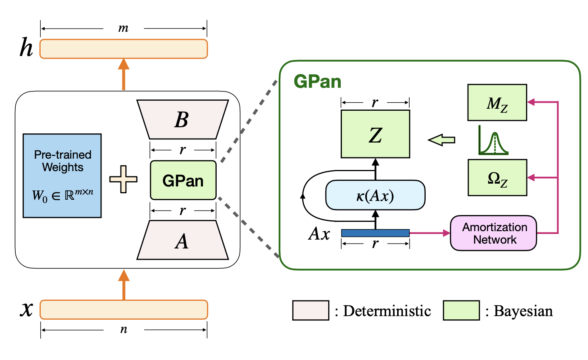
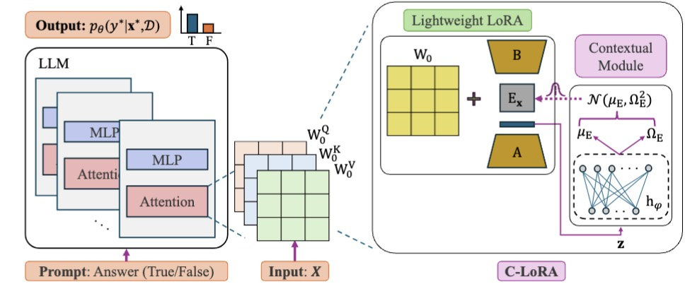
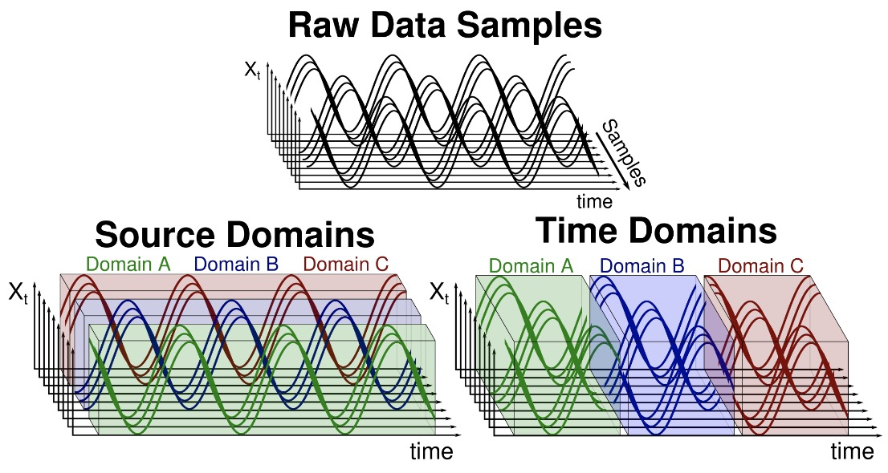
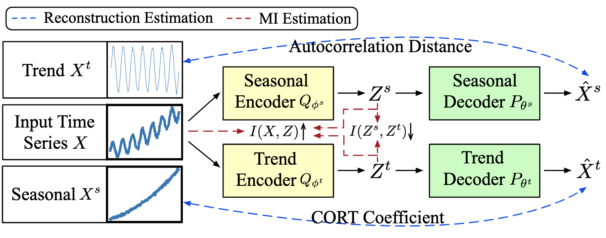
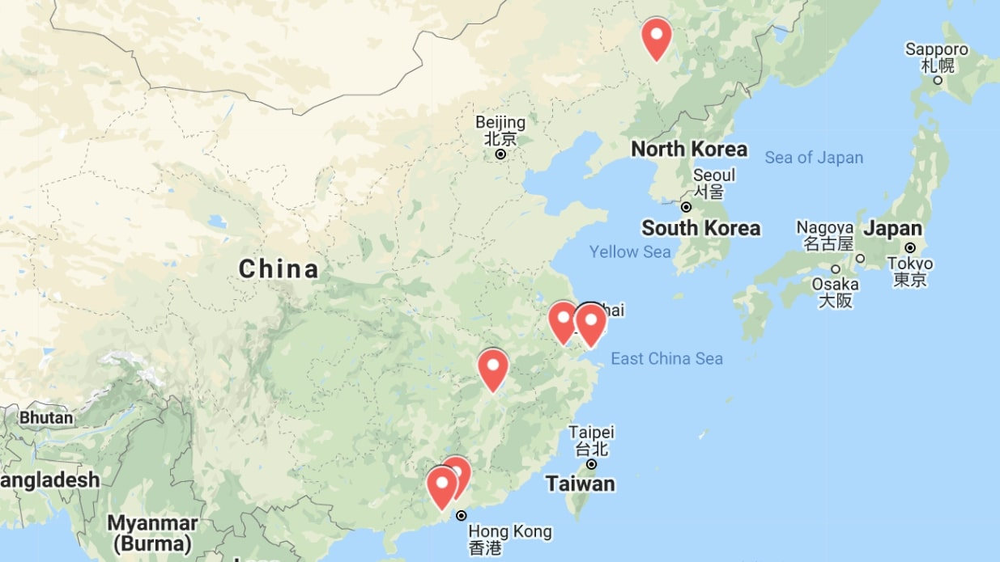

|
News
[2026/04] GPan-LoRA is accepted by ICML 2026.
[2025/09] C-LoRA is accepted by NeurIPS 2025.
|
|

|
GPan-LoRA: Gaussian Process Amortized Networks for Bayesian Low-Rank Adaptation in Large Language Models
Weifeng Zhang*,
Wenyuan Zhao*,
Amir Hossein Rahmati,
Yucheng Wang,
Zhiyuan Wang,
Chao Tian,
Xiaoning Qian
* Equal contribution.
ICML 2026.
Area: Bayesian Low-Rank Adaptation, Gaussian Processes, and Uncertainty Quantification.
Principled uncertainty quantification is essential for trustworthy fine-tuning of large language models, especially
under distribution shift. We propose GPan-LoRA, a scalable Gaussian Process-based Bayesian LoRA framework that
integrates sparse Gaussian Process approximations with amortized variational inference. By preserving Bayesian
function-space prior and posterior semantics within the low-rank adaptation space, GPan-LoRA achieves calibrated
uncertainty estimates while maintaining parameter-efficient fine-tuning and competitive task performance.
OpenReview /
PDF /
Code
|
|

|
C-LoRA: Contextual Low-Rank Adaptation for Uncertainty Estimation in Large Language Models
Amir Hossein Rahmati,
Sanket Jantre,
Weifeng Zhang,
Yucheng Wang,
Byung-Jun Yoon,
Nathan M. Urban,
Xiaoning Qian
NeurIPS 2025.
Area: Low-Rank Adaptation, Uncertainty Quantification, and Probabilistic Modeling.
Low-Rank Adaptation (LoRA) enables parameter-efficient fine-tuning of large language models, but often yields
overconfident predictions in data-scarce few-shot settings. We propose C-LoRA, a contextual uncertainty-aware
LoRA framework that develops lightweight, data-dependent LoRA modules to dynamically adapt uncertainty estimates
for each input. By incorporating data-driven contexts into the parameter posteriors, C-LoRA improves calibration,
mitigates overfitting, and provides robust uncertainty estimates while preserving efficient fine-tuning.
OpenReview /
arXiv /
Code
|
|

|
DyCVAE: Learning Dynamic Causal Factors for Non-stationary Series Domain Generalization (Student Abstract)
Weifeng Zhang,
Zhiyuan Wang,
Kunpeng Zhang,
Ting Zhong,
Fan Zhou
AAAI 2023.
Area: Domain Generalization, Representation Learning, and Disentanglement.
Learning domain-invariant representations is a major task of out-of-distribution generalization, extending existing
generalization methods for adapting non-stationary time series may be ineffective, because they fail to model the
underlying causal factors due to temporal-domain shifts except for source-domain shifts. To this end, we propose
a novel model DyCVAE to learn dynamic causal factors.
|
|

|
Learning Latent Seasonal-Trend Representations for Time Series Forecasting
Zhiyuan Wang,
Xovee Xu,
Weifeng Zhang,
Goce Trajcevski,
Ting Zhong,
Fan Zhou
NeurIPS 2022.
Area: Time Series Forecasting, Representation Learning, and Disentanglement.
Motivated by the success of disentangled variational autoencoder in computer vision and classical time series
decomposition, we propose LaST that infers a couple of representations that depict seasonal and trend components
of time series. Extensive experiments demonstrate its superiority on the time series forecasting task.
|
|

|
Identifying IP Usage Scenarios: Problems, Data, and Benchmarks
Fan Zhou,
Weifeng Zhang,
Yong Wang,
Ting Zhong,
Goce Trajcevski,
Ashfaq Khokhar
IEEE Network.
Area: Network, Resource.
We presented and investigated a novel and practical problem called IP usage scenario prediction in the internet community.
|
Conference Presentation
2022 36th Conference on Neural Information Processing Systems (NeurIPS), New Orleans, USA
2022 41st IEEE International Conference on Computer Communications (INFOCOM), Virtual Conference
|
Academic Service
Reviewer: NeurIPS 2026; ICML 2026; The Web Conference 2022, Industry Track; IEEE BigData.
|
Teaching Experience
Network Security Fall 2020 Teaching Assistant, with Prof. Ting Zhong, at UESTC.
|
Last updated on May, 2026
Template credit to Jon Barron
|
|